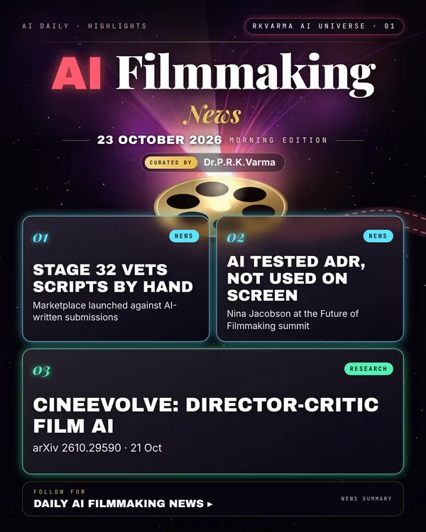

AI Filmmaking
Project page →1 minMore research papers in this category today → 7
Film people are drawing lines around AI: a screenplay marketplace now promises human-vetted projects, and a major producer says AI helped test dialogue but never reached the screen.
Research, industry & policy
- Stage 32 opens a marketplace to filter out AI-written scripts, Deadline · 22 Oct 2026: The creative-networking platform launched a marketplace where projects are checked by people before buyers see them, pitched as a response to the flood of machine-written submissions.
- Hunger Games producer: AI tested ADR lines, not used in the film, IndieWire · 22 Oct 2026: At IndieWire's Future of Filmmaking event, Nina Jacobson said AI voices were used to try out replacement dialogue before actors recorded it, and that the team would never put that audio in the finished film.
Journals & preprints
- CineEvolve: An Agentic Self-Evolution Framework for Cinematic Multi-Shot Video Generation, arXiv 2610.29590 · 21 Oct 2026: Trains one vision-language model to act as both director and critic, so it plans multi-shot film scenes and then fixes its own flaws.
Why it matters
Clear disclosure of where AI is and is not used is becoming part of how films and scripts earn trust with buyers and audiences.


Was this section useful?